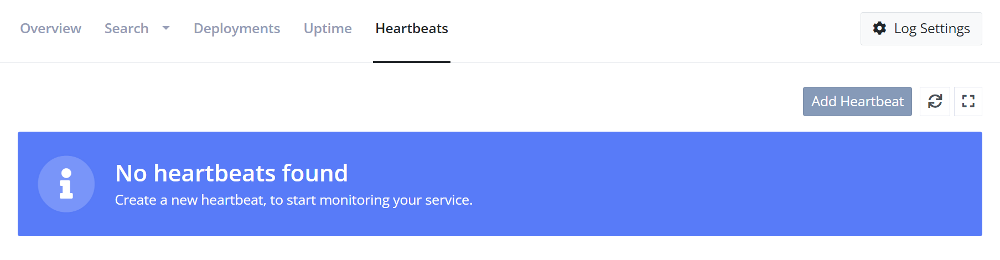
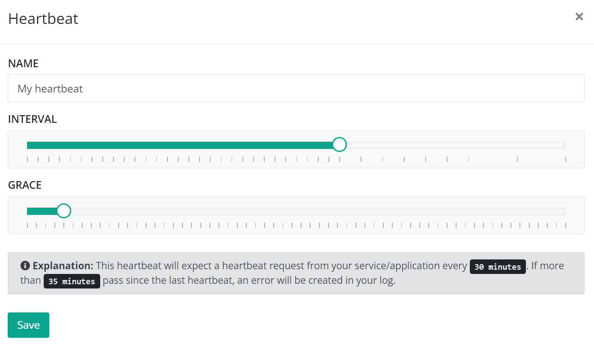
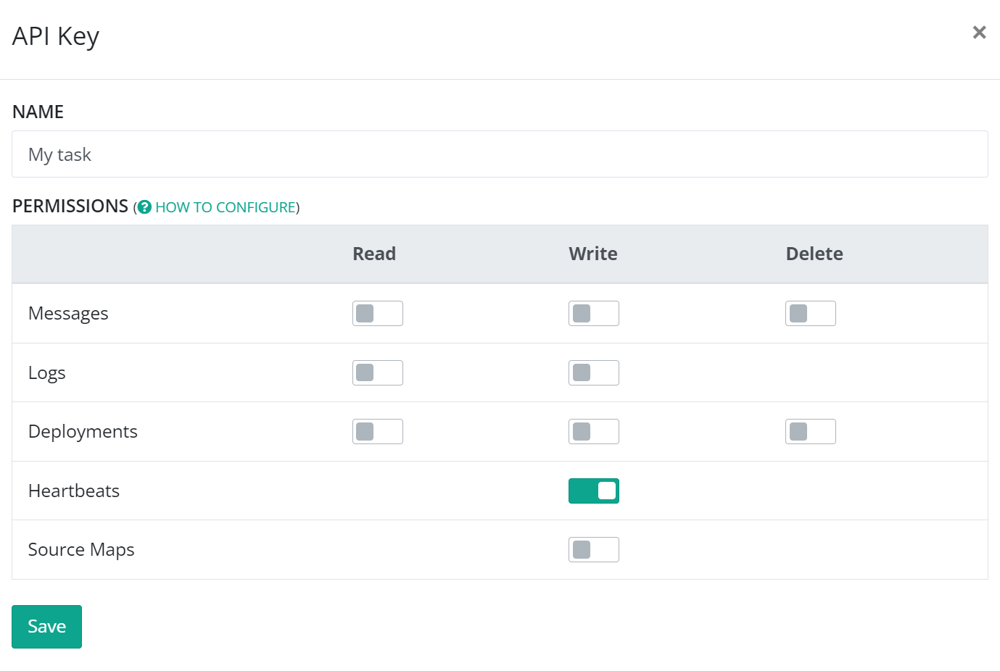

Set up Heartbeats
elmah.io Heartbeats complements the Error Logging and Uptime Monitoring features already available on elmah.io. Where Uptime Monitoring is based on us pinging your public HTTP endpoints, Heartbeats is the other way around. When configured, your services, scheduled tasks, and websites ping the elmah.io in a specified interval. We call these ping Heartbeats, hence the name of the feature. Whether you should use Uptime Monitoring or Heartbeats to monitor your code, depends on a range of variables. Uptime Monitoring is great at making sure that your public endpoints can be reached from multiple locations. Scheduled tasks and services typically don't have public endpoints and are expected to run at a specified interval. With Heartbeats, setting up monitoring on these kinds of services is extremely easy, since elmah.io will automatically detect when an unhealthy heartbeat is received or if no heartbeat is received.
Click one of the integrations below or continue reading to learn more about Heartbeats:


To better understand Heartbeats, let's create a simple example. For detailed instructions on how to set up Heartbeats in different languages and frameworks, select one of the specific articles in the left menu.
In this example, we will extend a C# console application, executed as a Windows Scheduled task, with a heartbeat. The scheduled task is run every 30 minutes.
Open a log on elmah.io and navigate to the Heartbeats tab:

Click the Add Heartbeat button and fill in a name. For Interval we are selecting 30 minutes since the task is scheduled to run every 30 minutes. For Grace, we select 5 minutes to give the task a chance to complete. Selecting 30 and 5 minutes means that elmah.io will log an error if more than 35 minutes pass since we last heard from the task:

To create heartbeats from our task, we will need an API key, a log ID, and a heartbeat ID. Let's start with the API key. Go to the organization settings page and click the API Keys tab. Add a new API key and check the Heartbeats - Write permission only:

Copy and store the API key somewhere. Navigate back to your log and click the Instructions link on the newly created Heartbeat. This will reveal the log ID and heartbeat ID. Copy and store both values since we will need them in a minute.
Time to do the integration. Like mentioned before, there are multiple ways of invoking the API. For this example, we'll use C#. Install the Elmah.Io.Client NuGet package:
dotnet add package Elmah.Io.Client
Install-Package Elmah.Io.Client
<PackageReference Include="Elmah.Io.Client" Version="5.*" />
paket add Elmah.Io.Client
Extend your C# with the following code:
using Elmah.Io.Client;
public class Program
{
public static void Main()
{
var logId = new Guid("LOG_ID");
var api = ElmahioAPI.Create("API_KEY");
try
{
// Your task code goes here
api.Heartbeats.Healthy(logId, "HEARTBEAT_ID");
}
catch (Exception e)
{
api.Heartbeats.Unhealthy(logId, "HEARTBEAT_ID");
}
}
}
Replace LOG_ID, API_KEY, and HEARTBEAT_ID with the values stored in the previous steps.
When the code runs without throwing an exception, your task now creates a Healthy heartbeat. If an exception occurs, the code creates an Unhealthy heartbeat and uses the exception text as the reason. There's an additional method named Degraded for logging a degraded heartbeat.
Depending on the heartbeat status, a log message can be created in the configured log. Log messages are only created on state changes. This means that if logging two Unhealthy requests, only the first request triggers a new error. If logging a Healthy heartbeat after logging an Unhealthy heartbeat, an information message will be logged. Transitioning to Degraded logs a warning.
Additional properties
Reason
The Healthy, Unhealthy, and Degraded methods (or the CreateHeartbeat class when using the raw Create method) accept an additional parameter named reason.
reason can be used to specify why a heartbeat check is either Degraded or Unhealthy. If your service throws an exception, the full exception including its stack trace is a good candidate for the reason parameter. When using integrations like the one with ASP.NET Core Health Checks, the health check report is used as the reason for the failing heartbeat.
Application and Version
When logging errors through one or more of the integrations, you may already use the Application and/or Version fields to set an application name and software version on all messages logged to elmah.io. Since Heartbeats will do the actual logging of messages, in this case, you can configure it to use the same application name and/or version number as your remaining integrations.
api.Heartbeats.Unhealthy(logId, "HEARTBEAT_ID", application: "MyApp", version: "1.0.0");
If an application name is not configured, all messages logged from Heartbeats will get a default value of Heartbeats. If no version number is configured, log messages from Heartbeats will be assigned the latest version created through Deployment Tracking.
Took
A single performance metric named Took can be logged alongside a heartbeat. The value should be the elapsed time in milliseconds for the job, scheduled task, or whatever code resulting in the heartbeat. For a scheduled task, the Took value would be the time from the scheduled task start until the task ends:
var stopwatch = new Stopwatch();
stopwatch.Start();
// run job
stopwatch.Stop();
api.Heartbeats.Healthy(
logId,
heartbeatId,
took: stopwatch.ElapsedMilliseconds);
The value of the Took property is shown in the History modal on the Heartbeats page on elmah.io.
Checks
Note
Checks require Elmah.Io.Client version 5.1.* or newer.
Some sites and services implement a range of different checks to decide if the program is healthy or not. Consider an ASP.NET Core website that verifies that both a connection to a database and a service bus can be established. In this example, a failing heartbeat to elmah.io can be decorated with one or more Checks:
api.Heartbeats.Unhealthy(logId, heartbeatId, checks: new List<Check>
{
new Check
{
Name = "Database",
Result = "Unhealthy",
Reason = "Could not connect to database"
},
new Check
{
Name = "Service Bus",
Result = "Healthy"
},
});
When logging checks in a heartbeat, the elmah.io UI will list each check on the Root Cause tab part of the unhealthy heartbeat error.
This article was brought to you by the elmah.io team. elmah.io is the best error management system for .NET web applications. We monitor your website, alert you when errors start happening, and help you fix errors fast.
See how we can help you monitor your website for crashes Monitor your website